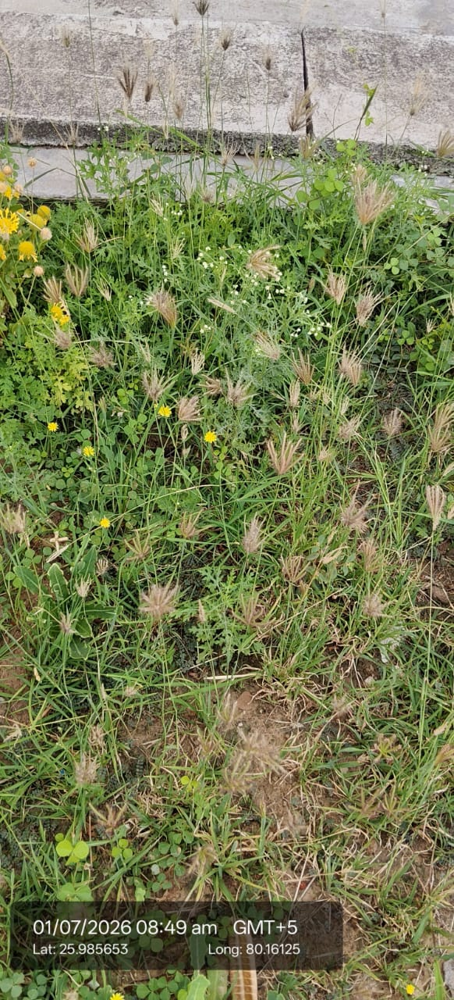

| Scientific name | Chloris barbata (likely, based on the hairy, finger-like spikes) |
|---|---|
| Type | Annual or perennial grass herb |
| Category | Grasses |
Habitat & Growing Conditions
- Native to tropical Africa and Asia. Now widespread across India as a common weed
- Very common in UP, including Kanpur. Grows in wastelands, roadsides, lawns, fields, and disturbed soil
- Loves full sun and hot, dry conditions. Germinates with early monsoon rains
- Tolerates poor, sandy, compacted, and alkaline soils. Highly drought resistant
- Grows quickly in open areas and after soil disturbance. You’ll see it in empty plots and along paths
Ecological & Economic Importance
- Fodder: Young plants are grazed by cattle and goats. Mature, dry plants have low nutrition and the hairy spikelets can irritate mouths
- Soil binder: Dense, fibrous roots help prevent soil erosion on slopes and bunds
- Weed: Considered an agricultural weed in crops like cotton, millet, and vegetables. Competes for water and nutrients
- Ecological: Pioneer species. Colonizes bare ground quickly. Seeds eaten by small birds
- Medicinal: In folk medicine, some Chloris species are used for fever and skin issues, but C. barbata is not widely used. Consult a healthcare professional before any medicinal use
- Commercial: No major commercial value. Some related species like Chloris gayana are cultivated as pasture grass